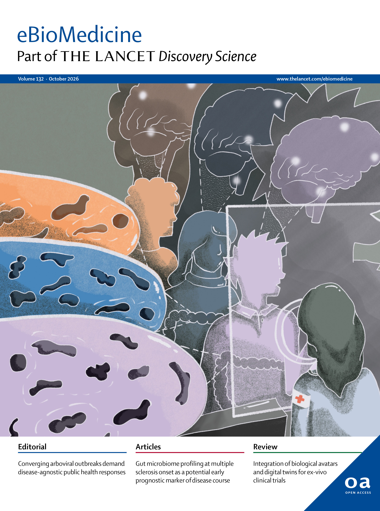
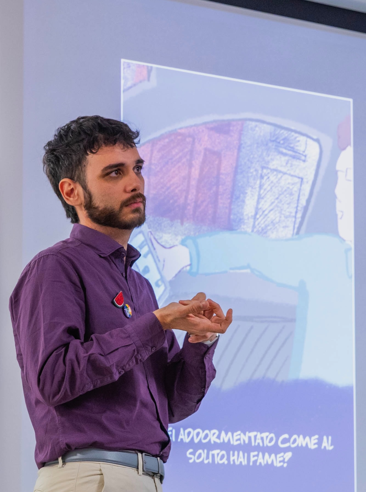
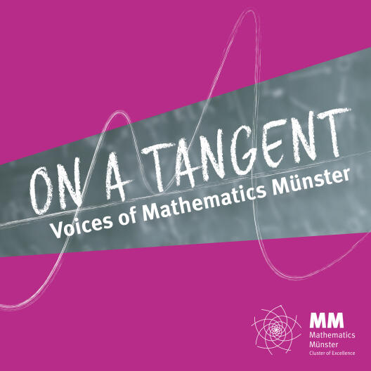
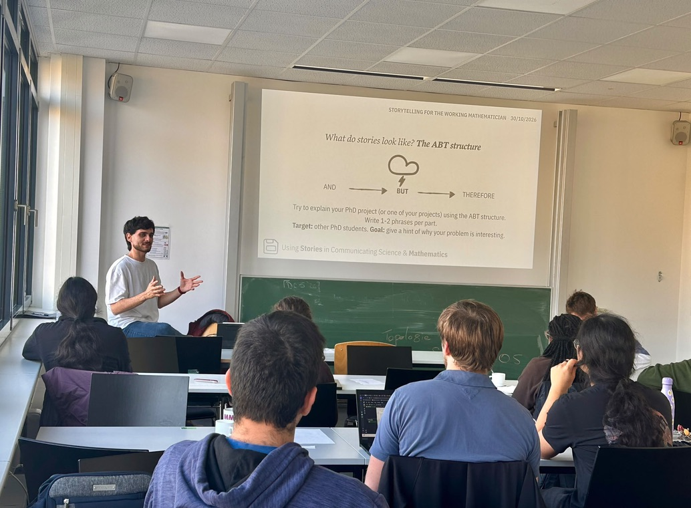

eBioMedicine cover
An illustration for a study on gut microbiome profiling and multiple sclerosis, selected for the cover of an eBioMedicine issue.
More on BehanceI help researchers communicate their work at the subtle intersection of clarity, rigour, and imagination.

I work as a communication officer at QBio and MIRRI-IT, a visual storyteller with CMCC, and a writer and editor.
I also co-founded Collettivo Ottavia, an urban lab exploring data and society, education, and visual arts.
PhD in Mathematics
Cluster of Excellence Mathematics Münster
Master in Science Communication
International School for Advanced Studies (SISSA)
Freelance Science Communicator

An illustration for a study on gut microbiome profiling and multiple sclerosis, selected for the cover of an eBioMedicine issue.
More on Behance
I have realized a series of short video interviews to researchers, to showcase the project ON-AIR: Artificial Intelligence and Integrated Omics for Precision Oncology.
Watch on the ON-AIR website
A podcast I designed, hosted, and produced for its first season, sharing the stories behind mathematics through conversations with early-career researchers.
Listen on Spotify
How can we use stories to communicate mathematics?
In this workshop, targeted at early-career mathematicians, we walk through the basics of science communication and the central ideas of storytelling. We learn how to identify the fundamental parts of a story and its workings. We then see how storytelling can be used in the communication of scientific research, and mathematics in particular.